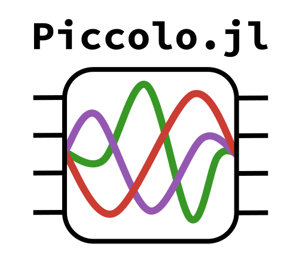

Piccolo.jl

| Documentation | Build Status | Support | License |
|---|---|---|---|
"Technologies are ways of commandeering nature: the sky belongs to those who know how to fly; the sea belongs to those who know how to swim and navigate." – Simone de Beauvoir
Description
Piccolo.jl is a meta-package for quantum optimal control using the Pade Integrator COllocation (PICO) method.
For documentation please see the individual packages.
JuliaCon 2023 Talk
To see an overview of the PICO method and a demo of how to use this package, check out our recorded talk at JuliaCon 2023 here.
Direct Collocation for Quantum Optimal Control
To see a detailed description of the PICO method, check out our paper here. It won 2nd best paper in the QTEM category at IEEE QCE 2023!
Usage
Just run
using Piccoloand this package reexports the following packages
Installation
This package is registered! To install enter the Julia REPL, type ] to enter pkg mode, and then run
pkg> add PiccoloLocal Development
To develop locally, clone this repo and then instantiate the environment in the REPL by running first
pkg> activate .and then,
pkg> instantiate Both commands should be run in pkg mode, which is activated by typing ] in the REPL.
To start julia with the current environment, run
julia --projectfrom the Piccolo.jl directory.
To run the scripts use, e.g.,
julia -t <num_threads> --project examples/three_qubit_swap/swap.jlwhere <num_threads> is the number of threads you want to use as QuantumCollocation.jl takes advantage of multithreading. The --project flag is necessary to make sure the correct environment is loaded.